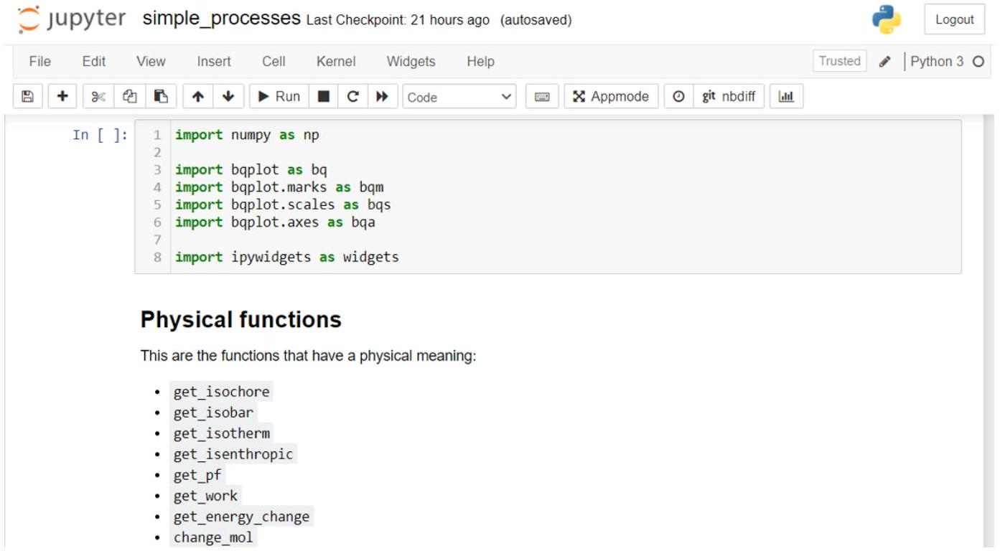
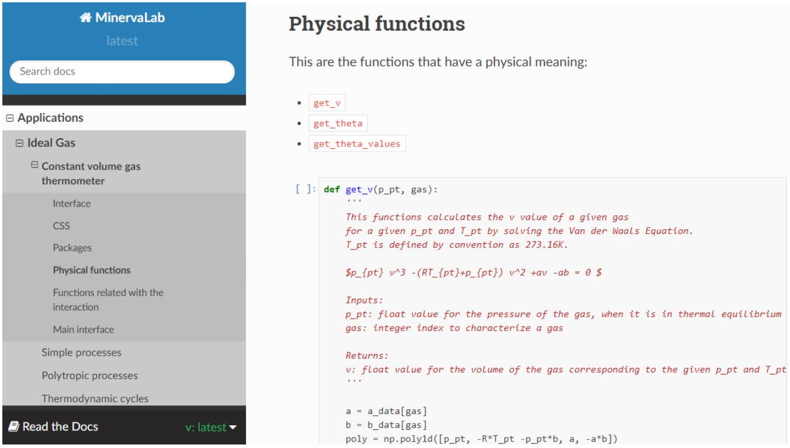

MinervaLab II: Jupyter Notebook-etan oinarritutako irakaskuntza-proiektu alternatiboa
Iker Gonzalez Yeregui, “MinervaLab II: Jupyter Notebook-etan oinarritutako irakaskuntza-proiektu alternatiboa,” Bachelor's Thesis (Gradu Amaierako Lana), Física, University of the Basque Country (EHU), July 2021. Directed by Josu M. Igartua Aldamiz.
A notebook breathes math / ideal gas spins in the browser / free, for any hand
Abstract
Lan honen helburua fisikaren irakaskuntzarako euskarri digital bat garatzea da: MinervaLab proiektua, Jupyter Notebook-etan oinarritutako web-aplikazio sorta bat, termodinamika eta fisika estatistikoaren kontzeptuak modu interaktiboan irudikatzen dituena. Lehendik sortua zegoen proiektuari ekarpen kualitatibo zein kuantitatiboa eginez, 2.0 bertsioa garatzen da, gas idealaren eta Fermi-ren gas idealaren inguruko kontzeptuak landuz. Zeharkako helburu gisa, proiektua garatzeko tresnak eta lan-moduak hautatzen dira, software librearen filosofiaren baitan, edonoren eskura egon daitezen: Jupyter Notebook, Git/GitHub, Binder eta ReadTheDocs. Lanean proiektuaren motibazioa, garapena, erabilitako tresnak eta lortutako emaitzak jasotzen dira, baita ondorioak eta hurrengo pausuen inguruko eztabaida ere.
Key figures


How to cite
Iker Gonzalez Yeregui (2021). MinervaLab II: Jupyter Notebook-etan oinarritutako irakaskuntza-proiektu alternatiboa. Bachelor’s Thesis (Gradu Amaierako Lana), Física, EHU. Directed by Josu M. Igartua Aldamiz.
@mastersthesis{tfg-2021-02,
author = {Gonzalez Yeregui, Iker},
title = {MinervaLab II: Jupyter Notebook-etan oinarritutako irakaskuntza-proiektu alternatiboa},
type = {Gradu Amaierako Lana (Bachelor's Thesis)},
school = {University of the Basque Country (EHU)},
address = {Leioa, Spain},
year = {2021},
note = {Directed by Josu M. Igartua Aldamiz}
}